Primer piso
Un lobby de doble altura
Entras por la esquina de la Calle 56 con Carrera 18 a un lobby con madera, plantas y luz de las dos calles.
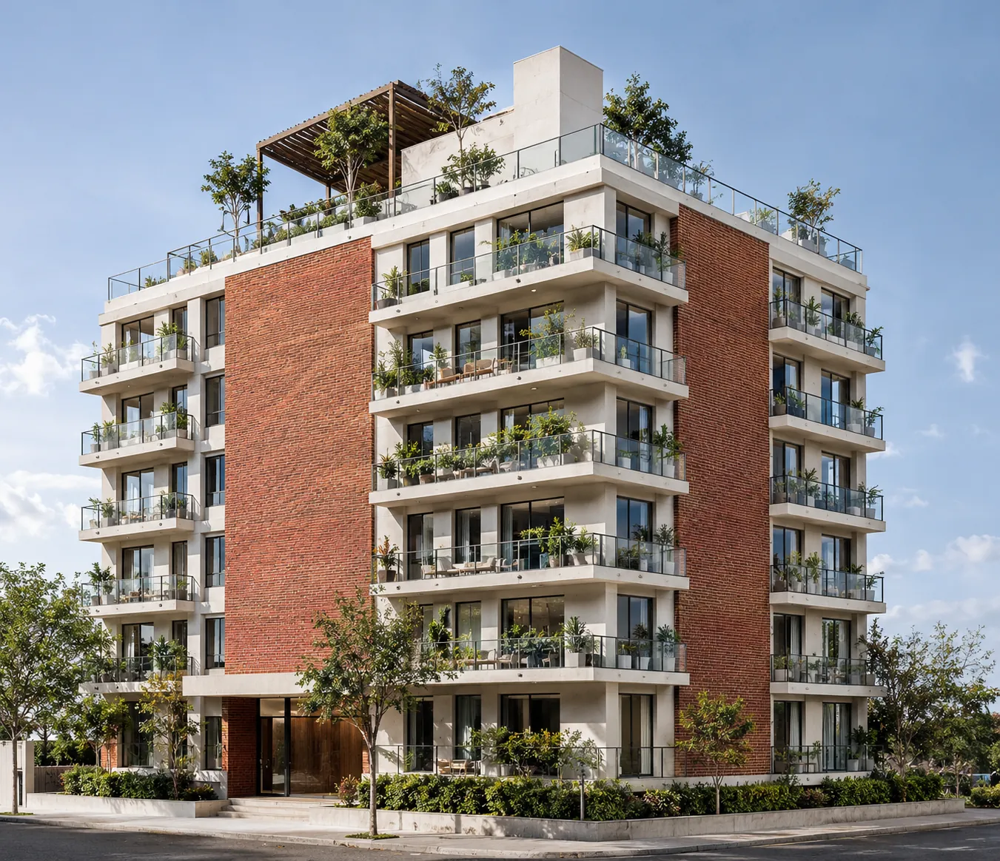
Galerías, Teusaquillo
20 apartamentos con balcón de 70 y 78,75 m², desde $630.000.000, entre los árboles de la Calle 56 con Carrera 18.
Primer piso
Entras por la esquina de la Calle 56 con Carrera 18 a un lobby con madera, plantas y luz de las dos calles.
Primer piso, sobre la Calle 56
Mesas bajo los árboles del antejardín, parasoles y bombillos que se encienden al atardecer. El barrio entra al edificio.
Pisos 2 a 6
41 m² con piso de nogal, cocina de nogal con mesón de mármol y un ventanal sobre la calle.
Pisos 2 a 6
Ventanal de piso a techo, baño privado y clóset. La segunda alcoba queda junto al baño social.
Apartamento tipo A, 78,75 m²
Pisos de nogal en las zonas de estar y porcelanato claro en baños y pasillo. Ropas y depósito dentro del apartamento.
Planta tipo
Alrededor del punto fijo con ascensor y escalera: dos sobre la Calle 56 y dos hacia el jardín del patio.
Fachada
Baranda de vidrio para que desde la calle se vean las plantas, y dos franjas de ladrillo calado que dan sombra.
Cubierta
Pérgola de madera, zona BBQ, café lounge y gimnasio al aire libre para todos los vecinos.
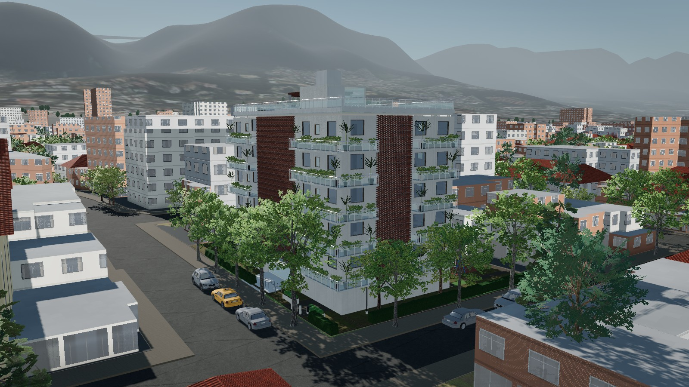
8:24 a. m.
Los apartamentos de esquina abren a dos calles: la luz y el aire cruzan la sala y la luz eléctrica queda para la noche.
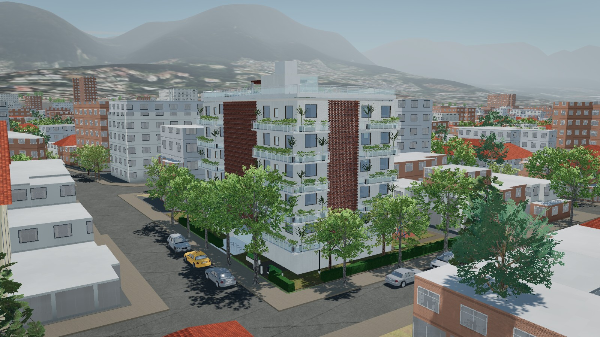
12:24 p. m.
Dos franjas de ladrillo calado dan sombra al mediodía y dejan pasar la brisa. Es ladrillo de la sabana, que dura décadas sin pintura.
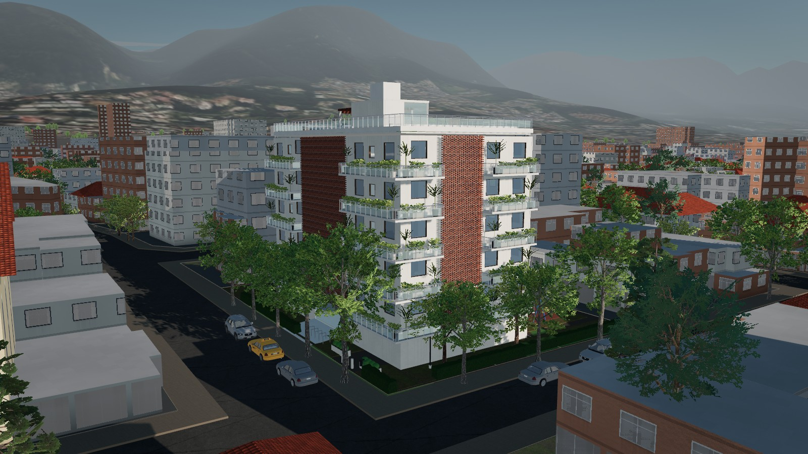
4:24 p. m.
Jardineras en los balcones, antejardines sembrados y árboles nuevos en el patio: más sombra en la calle y menos calor en la fachada.
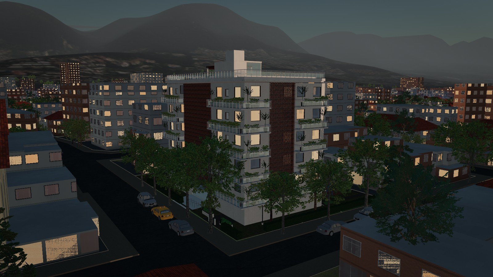
5:51 p. m.
Bicicletero en el primer piso, la troncal NQS a pocas cuadras y rutas del SITP por las calles 53 y 57. Adentro, luz LED cálida.
Pañete blanco con dos franjas de ladrillo calado que marcan la esquina. Los balcones salen sobre la calle con baranda de vidrio, para que desde afuera se vean las plantas y no los barrotes.
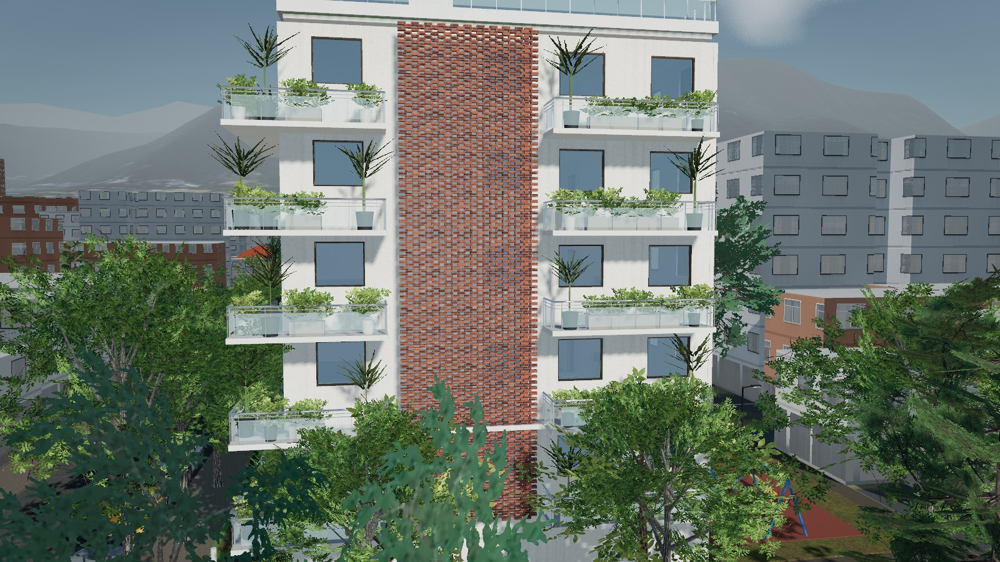
Sobre la Calle 56, frente a la parroquia. Los esquineros tienen dos fachadas.
$708.750.000
| Sala, comedor y cocina | 41,0 m² |
|---|---|
| Alcoba principal con baño | 16,1 m² |
| Alcoba 2 | 10,5 m² |
| Baño social | 4,9 m² |
| Ropas y depósito | 6,7 m² |
| Área total con muros y balcón | 78,75 m² |
Hacia el jardín del patio, del lado más silencioso.
$630.000.000
| Sala, comedor y cocina | 40,0 m² |
|---|---|
| Alcoba principal con baño | 10,8 m² |
| Alcoba 2 | 7,9 m² |
| Baño social | 2,9 m² |
| Ropas y depósito | 3,9 m² |
| Área total con muros y balcón | 70,00 m² |
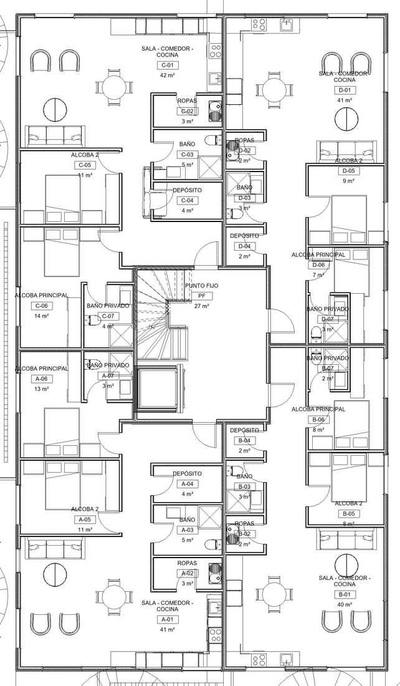
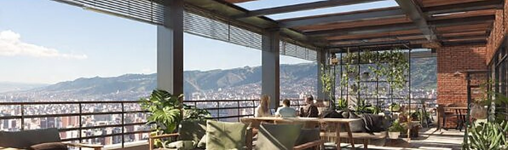
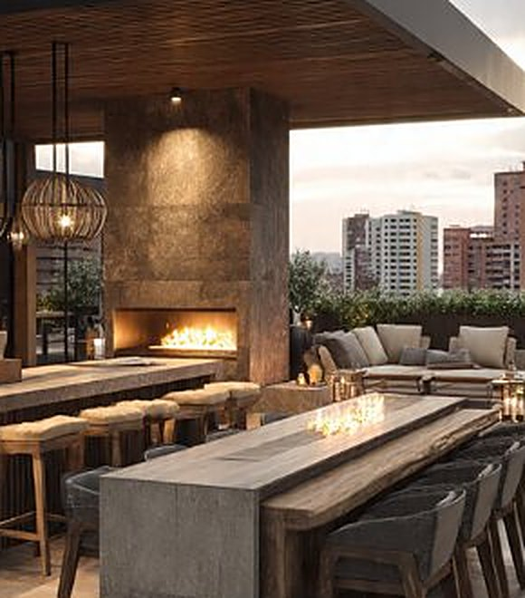
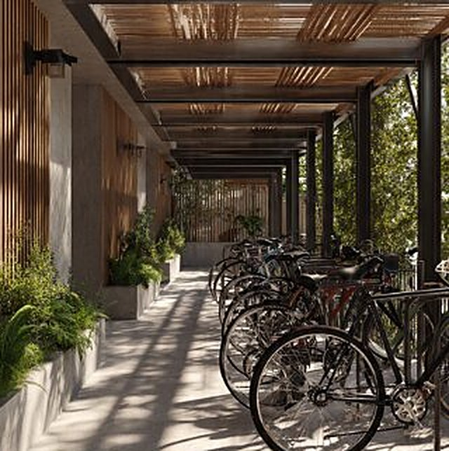
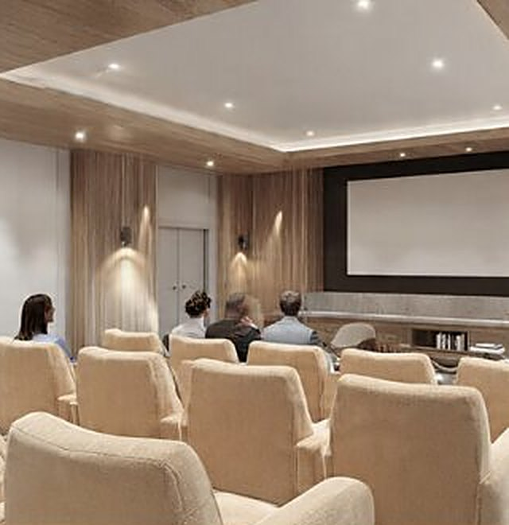
Calle 56 con Carrera 18. Un barrio de casas de ladrillo y calles arborizadas, con comercio de barrio sobre las calles 53 y 57.
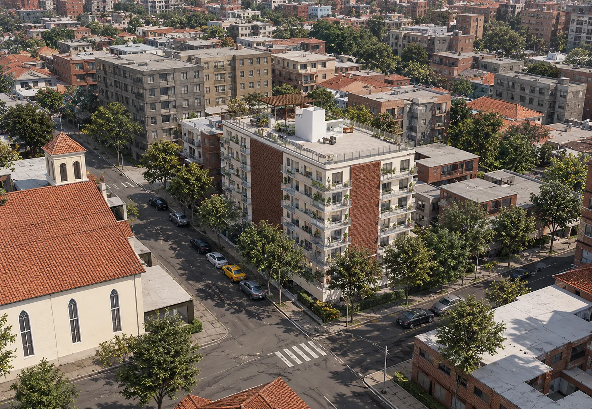
Gira el edificio sobre el barrio real, cambia la hora del día y entra piso por piso a cada apartamento, a su cocina y a su habitación.